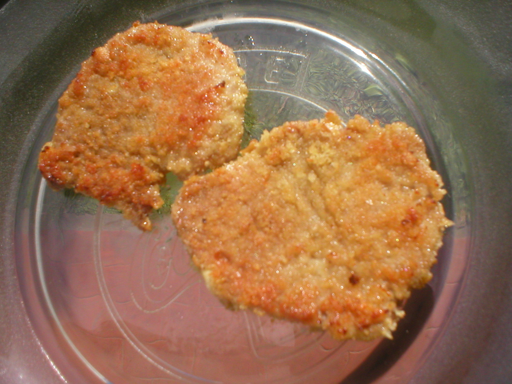

Home
Receta de milanesas

Sobre esta receta:
Pocas comidas despiertan tanta pasión y nostalgia como una buena milanesa casera.
Es el verdadero clásico de los almuerzos de domingo,
el plato que nos transporta a la cocina de los abuelos y el favorito indiscutido de grandes y chicos.
En esta receta te enseñamos a preparar la milanesa perfecta:
tierna por dentro, súper crocante por fuera y con ese dorado justo que se logra cuidando la temperatura del aceite.
Usamos cortes tradicionales como bola de lomo, nalga o cuadrada,
y te revelamos el secreto del marinado (la famosa "huevada") con un toque de ajo,
perejil fresco y mostaza para que cada bocado explote de sabor.
Ya sea que las prefieras fritas o al horno, solas con limón,
con un puré cremoso o transformadas en una tremenda milanesa a la napolitana,
esta guía paso a paso te garantiza el éxito en la mesa.
Ingredientes y preparacion
Ingredientes para 8 milanesas pequeñas
- 2 huevos
- 1 cda. de mostaza de Dijon
- Jugo y ralladura de 1 limón
- 1 diente de ajo
- Perejil picado
- Pan rallado
- 1kg de bola de lomo
Preparacion paso a paso:
-
Lo primero que vamos a hacer es batir los huevos y agregar dentro todos los ingredientes de la marinada.
Vamos a mezclar todo bien.
-
Siguiente: Vamos a salar las milanesas y colocarlas dentro de la marinada, tienen que quedar bien embebidas.
Las vamos a tapar con papel film y las vamos a llevar a la heladera mínimo por una hora. Cuanto más, mejor.
-
Pasado ese tiempo, vamos a sacarlas de la heladera.
Luego, milanesa por milanesa, vamos a empanarlas con el pan rallado,
presionando de ambos lados hasta que las recubra bien.
-
Finalmente, lo que queda es freírlas en aceite bien caliente hasta que estén doradas y disfrutarlas mucho.